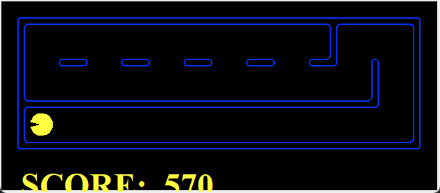
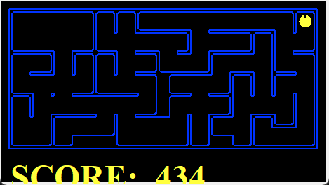
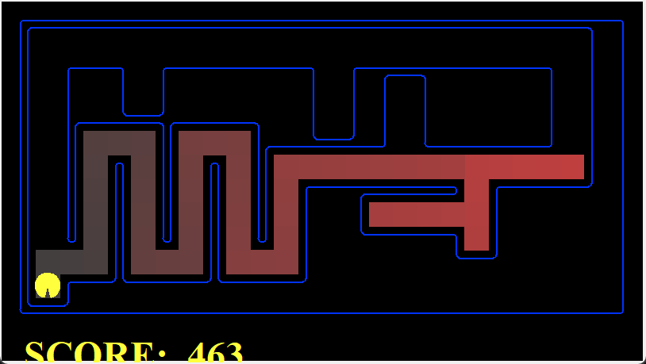
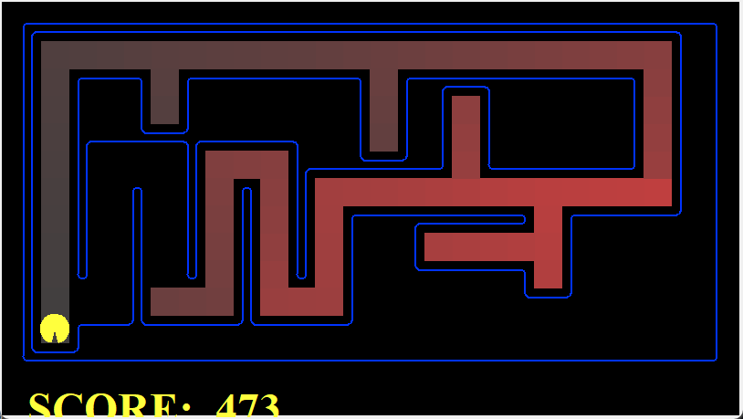
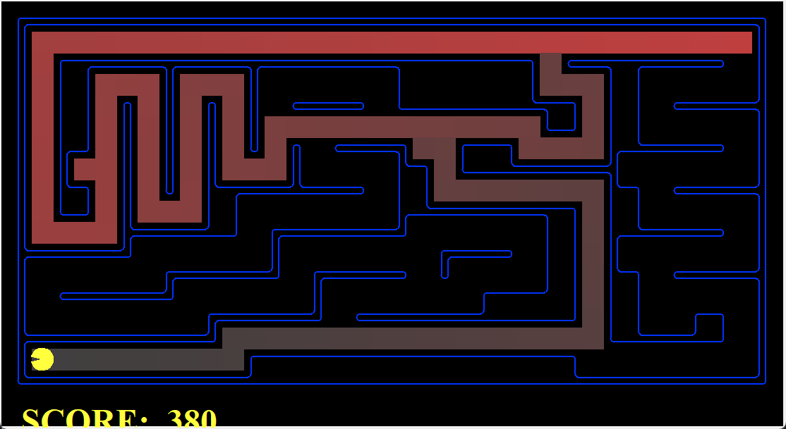
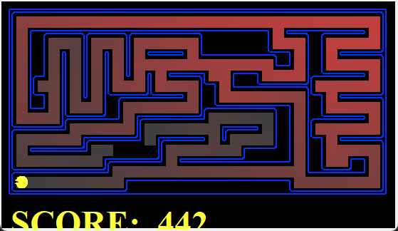
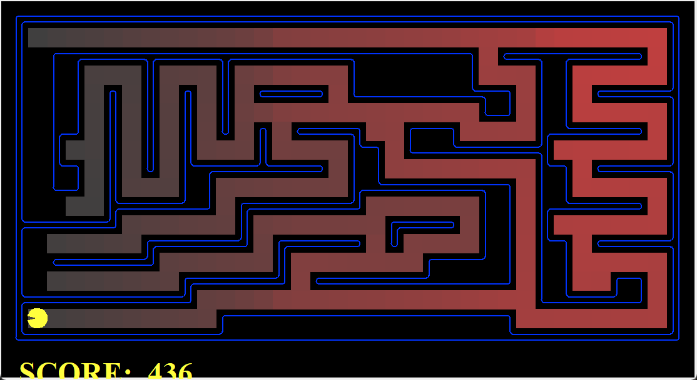

Only search.py, searchAgents.py and the new layout were edited. Every algorithm is written
inside its own provided function; the single exception is depthFirstSearch, which calls the helper
_depthFirstSearch so the mandatory North-East-South-West order is enforced without touching
PositionSearchProblem. The CSV logger is one shared class in search.py, called from inside each loop.
iteration, expanded_state, parent, action, generated_successors, frontier_before, frontier_after, explored, g, h, f.
The frontier is printed with the next state to be expanded first. DFS, BFS and UCS log h = 0 and f = g;
GBFS logs f = h because it orders by h alone.All five searches are graph searches: a state is never expanded twice unless A* finds a strictly cheaper path to it. Notation: b branching factor, d depth of the shallowest goal, m maximum depth, C* optimal cost, ε smallest step cost, |S| number of reachable states (free cells in a maze).
| Algorithm | Fringe (util.py) | Order by | Time | Space | Complete | Optimal |
|---|---|---|---|---|---|---|
| DFS | Stack (LIFO) | most recent | O(bm) | O(min(|S|, bm)) | yes (finite, explored set) | no |
| BFS | Queue (FIFO) | depth | O(bd) | O(bd) | yes | unit costs |
| UCS | PriorityQueue | g(n) | O(b1+⌊C*/ε⌋) | O(b1+⌊C*/ε⌋) | yes | yes |
| GBFS | PriorityQueue | h(n) | O(bm) | O(bm) | yes (finite, seen set) | no |
| A* | PriorityQueue | g(n) + h(n) | O(bd) good h | O(bd) | yes | h admissible |
In a grid maze every bound is also capped by the number of cells: with a binary heap each expansion costs O(log |S|), so UCS and A* run in O(|E| log |S|), and DFS and BFS in O(|S|). Each fringe entry stores its action list, so a run also pays O(|S| · L) memory for paths of length L. That is the price of keeping every algorithm inside one small function and it is negligible at maze sizes.
PriorityQueue.update, so a cheaper path to a state already in the fringe lowers its priority instead of adding a duplicate. Costs and paths live in dictionaries.h only. A state's priority never changes, so it is queued once. The heuristic is passed as heuristic=name on the command line through the unchanged SearchAgent.f = g + h and re-opens a state whenever a cheaper g appears, which keeps it optimal even for an admissible heuristic that is not consistent.Nodes expanded on bigMaze (path cost 210 for every optimal algorithm). DFS also returns cost 210 here by luck of the maze, not by guarantee.
A state is (position, visitedCorners). position is Pacman's (x, y). visitedCorners is a tuple of the
corners reached so far, always kept in the fixed order of self.corners. Two paths that reach the same corners in a different
order therefore produce the same state, which is what lets graph search merge them.
A state is (position, foodGrid), where foodGrid is a Grid of booleans. The goal is an empty grid. The class ships
fully implemented and is not edited. The state space is up to |free cells| × 2|dots|, which is why an informed heuristic matters:
blind search on trickySearch is hopeless, while A* with our heuristic expands only 255 nodes.
The goal test is one line: self.food[x][y]. findPathToClosestDot runs BFS, so it returns the nearest dot, and the agent repeats this
until the board is empty. It is greedy across dots: on bigSearch it collects everything with a path of 350 steps. It does not promise the shortest
tour, only the shortest hop each time.


Remove the walls and count Manhattan distance. The cheapest way to visit the remaining corners in that relaxed maze is the shortest Manhattan tour from Pacman through every unvisited corner. With at most four corners there are at most 24 orders to try, so it is computed exactly on every call.
Let F be the remaining dots and d the true maze distance, computed with the provided mazeDistance (BFS) and cached in problem.heuristicInfo.
The heuristic is
h(s) = minf∈F d(p, f) + MSTd(F)
where MSTd(F) is the weight of a minimum spanning tree over the dots with maze distances as edge weights (Prim). The tree depends only on which dots are left, so it is cached per dot set. Cost: O(k2) for one tree of k dots, each pair distance is one BFS the first time it is needed, and O(k) per call afterwards.
The supplied heuristic tests check each fixture's start state against the true cost and check its immediate successor edges for a consistency drop; the proofs above establish the general result. On trickySearch it reports 255 expanded nodes against the thresholds 15000 / 12000 / 9000 / 7000, so the question scores 5 of 4.
Every run was made through pacman.py, which also wrote its CSV trace. Time is the search only, measured by the agent. The corner and food runs use A* with the heuristics of Section 3.
| Run | Path cost | Nodes expanded | Seconds |
|---|---|---|---|
| DFS tinyMaze | 10 | 15 | 0.00 |
| DFS mediumMaze | 130 | 146 | 0.00 |
| DFS bigMaze | 210 | 390 | 0.10 |
| BFS mediumMaze | 68 | 269 | 0.00 |
| BFS bigMaze | 210 | 620 | 0.10 |
| UCS mediumMaze | 68 | 269 | 0.00 |
| UCS mediumMaze (substitute for mediumDenselyMaze) | 68 | 269 | 0.00 |
| UCS StayEastSearchAgent mediumMaze | 1 | 260 | 0.00 |
| GBFS bigMaze (Manhattan) | 210 | 466 | 0.00 |
| GBFS bigMaze (Euclidean) | 210 | 471 | 0.10 |
| A* bigMaze (null heuristic) | 210 | 620 | 0.10 |
| A* bigMaze (Manhattan) | 210 | 549 | 0.10 |
| BFS CornersProblem tinyCorners | 28 | 252 | 0.00 |
| A* corners mediumCorners | 106 | 741 | 0.30 |
| A* food trickySearch | 60 | 255 | 0.20 |
| ClosestDot bigSearch | 350 | n/a | n/a |
The layout 24i3025Search.lay is 26 × 13 cells. Pacman starts at the top right and the food is in the bottom-left corner (1, 1), where SearchAgent expects the goal.
It has decision branches, four dead ends and two ways to reach the food.
Greedy search always takes the frontier state with the smallest h. The decoy corridor keeps offering smaller values than the top edge, so GBFS commits to the serpentine and never looks at the top route. A* adds the cost already paid, g. Inside the serpentine g grows quickly while h barely moves, so f climbs above the top route's and A* switches to it.


| Run | Path cost | Nodes expanded | Seconds |
|---|---|---|---|
| DFS custom maze | 47 | 47 | 0.00 |
| BFS custom maze | 37 | 88 | 0.00 |
| UCS custom maze | 37 | 88 | 0.00 |
| GBFS custom maze | 47 | 54 | 0.00 |
| A* custom maze | 37 | 84 | 0.00 |
Task 1 names N–E–S–W expansion, but the protected PositionSearchProblem.getSuccessors returns N, S, E, W and the autograder q1 reference solutions are generated from that order. Following the teacher instruction that all tests must pass, depthFirstSearch pushes successors in the order getSuccessors returns them, with no reordering. No other algorithm reorders successors, and no protected file or fixture was changed.

The PDF lists -l mediumDenselyMaze and -l stayEastSearch. Neither layout exists, and directional cost is an agent here, not a layout.
The literal commands fail exactly like this:
Substitutes used: -l mediumMaze -p SearchAgent -a fn=ucs -z .5 and -l mediumMaze -p StayEastSearchAgent.


pacman.py or util.py; it lives in search.py.gbfs was added to search.py; SearchAgent finds it with getattr.h = 0, f = g so every CSV has the same columns.24i3025Search.lay.